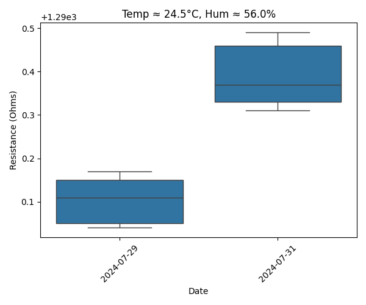

This dashboard presents resistance measurement trends over time (1 kHz), including environmental factors like temperature and humidity. It uses advanced statistical analysis including Allan deviation, allowing for deep insights into system behavior and drift.
Mean resistance on each date with standard deviation bars.
Average temperature per measurement date.
Humidity levels per date to study environmental impact.
Noise characterization over different averaging times.
Longitudinal drift at 1 kHz across test dates.
Drift trend against mean temperature.
Drift plotted against humidity during tests.
Boxplots comparing resistance under near-identical temp & humidity conditions.
